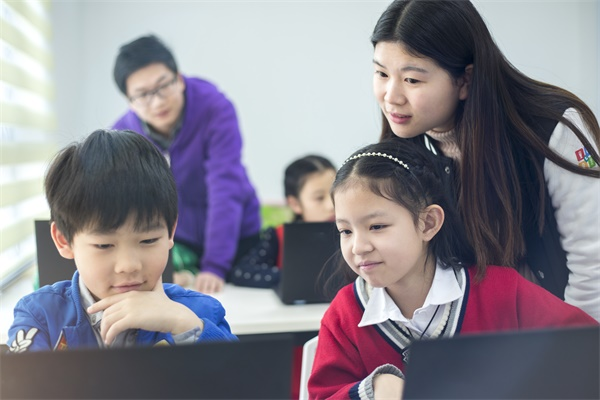

Yuan Wang - Service Section
Home
I give back to my community by teaching children computer languages such as Python.
When I was a child, a very nice computer science teacher introduced me to computer language and let me feel the wonders of computer science.
At that time, I fell in love with computer science and wanted to continue studying it in the future.
Compared with the past 10 years, an increasing number of children want to learn computer language.
I want to bring the same feelings to those children and let them love computer science.
